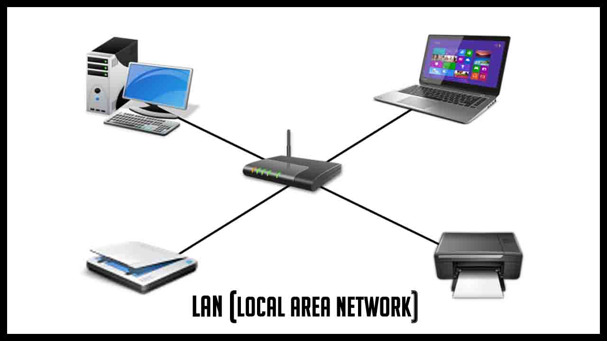

RC
Autor:Isaac Briceño
Es importante verificar que todo funciona correctamente. Si dispones ya de una instalación en tu empresa
Una red debe ser:

Características de las redes de computadoras
Velocidad
Es la velocidad a la que se transmiten los datos por segundo a través de la red. La rapidez de subida y descarga de datos será diferente según los estándares que utilicemos y también según el tipo de red o medio a través del que se transmiten los datos
Seguridad de la red
Es uno de los aspectos más peligrosos que rodean a las redes inalámbricas, la aparición de intrusos que nos quitan ancho de banda es una de las razones que convierte estas redes en bastante más vulnerables.
Confiabilidad
Mide el grado de probabilidades que existe de que uno de los nodos de la red se averíe y por tanto se produzcan fallos.
Escalabilidad
Una red no puede añadir nuevos componentes de forma continua y esperar que funcione a la misma velocidad. A medida que añadimos nuevos nodos y estos se hallan funcionando a la vez, la conexión a Internet se reduce, la velocidad de transmisión de datos en general es menor y hay más probabilidad de errores.
Disponibilidad
Es la capacidad que posee una red para hallarse disponible y completamente activa cuando la necesitamos. Hablamos de la cantidad de tiempo posible en que podemos someter los nodos a unas condiciones de rendimiento necesarias en nuestra empresa.
